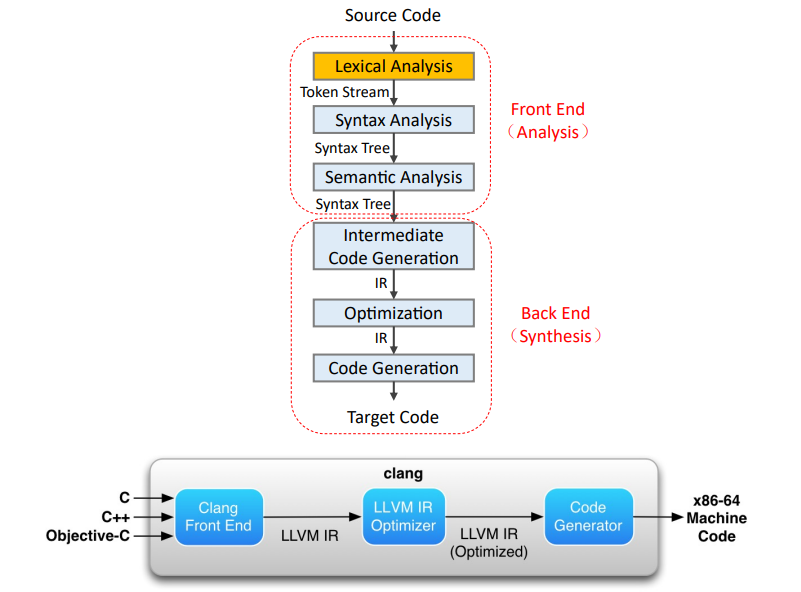

总览 编译过程 总体分为两部分：前端和后端 前端：识别，理解，报错 词法分析：分析词。源代码 -> token流 语法分析：分析语句。token流 -> AST 或者 解析树 语义分析：上下文。AST -> AST + 符号表 后端：综合分析，生成等价的目标程序 中间代码生成：转换。 AST -> IR 代码优化：IR -> （优化后的）IR 目标代码生成：可执行。 IR -> instrutions 